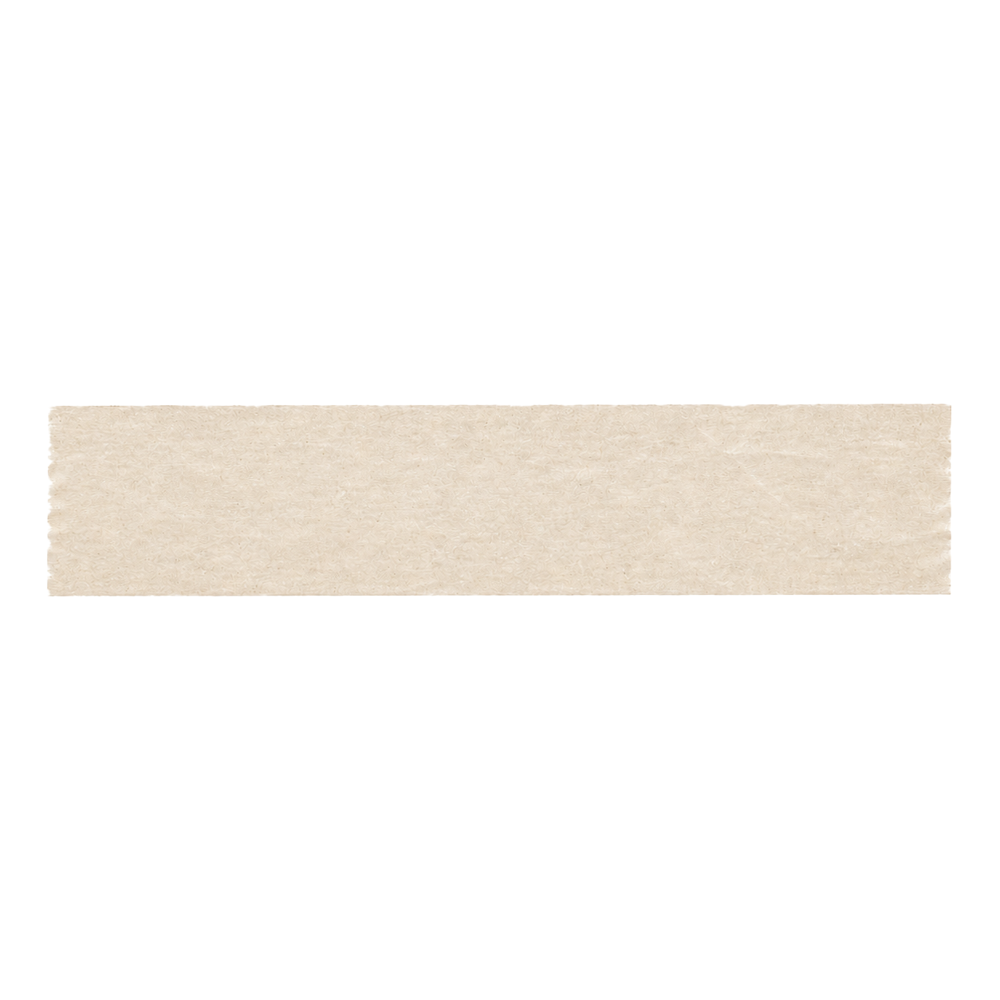
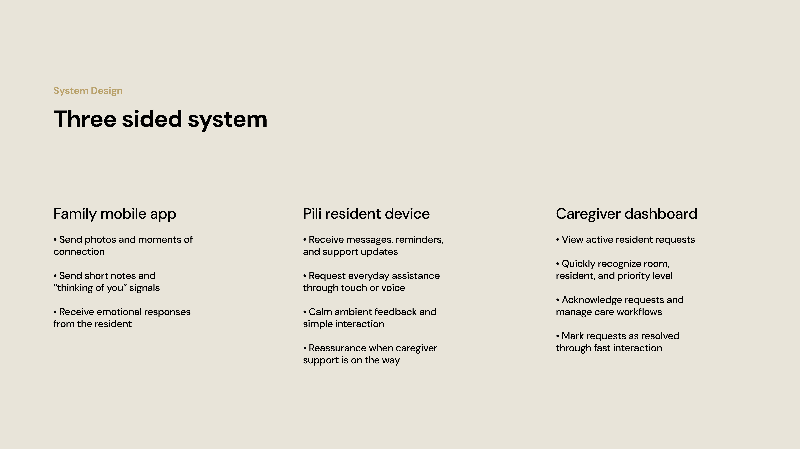
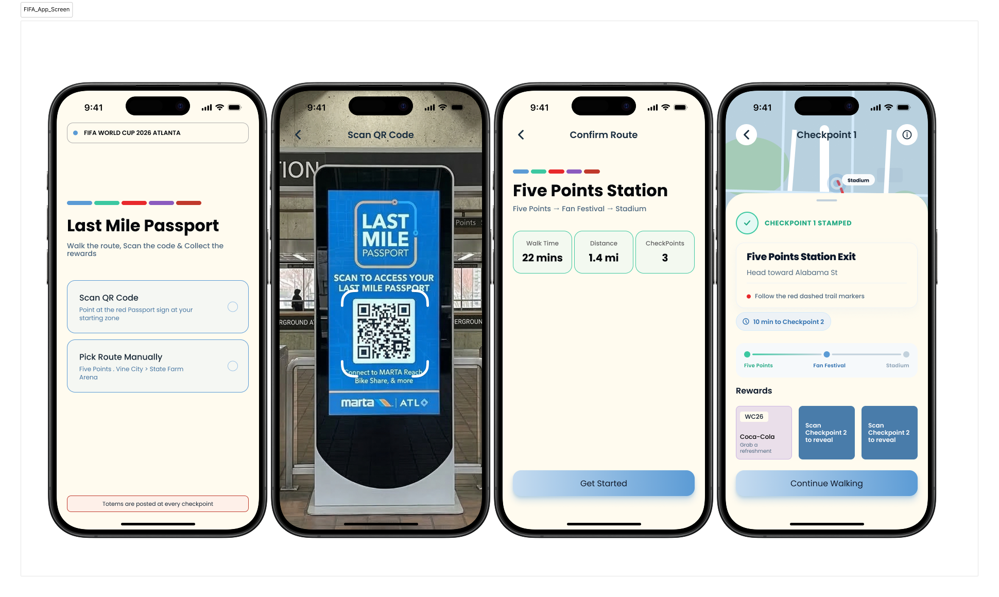

Hi, I'm Niharika —
a UX designer who turns messy systems into calm, playful experiences.
I design digital products, physical-digital systems, and visual stories that make complex things easier to use and easier to understand.
selected work inside


selected work
Selected Work
A small archive of systems, stories, and experiments.
Case File 01
'">

'+this.getAttribute('src')+'2026 · Senior Capstone
Pili
A calm connection system for older adults, families, and caregivers.
UX Research · Product Design · UI/UX · Physical-Digital System
Open case file →
Case File 02

2026 · Product / Web App
BioSpherix Layout Planner
An AI-assisted layout planning tool for custom environmental chamber systems.
AI · UX · Web App · Engineering Workflow
Open case file →
Case File 03
'">

'+this.getAttribute('src')+'2026 · SCADpro
FIFA World Cup 2026 Atlanta
A collaborative service design concept for the Atlanta World Cup fan experience.
UX Research · Service Design · Collaboration
Open case file →
Case File 04
Wisdom ATL Eyewear
- Model
- Riverside
- Color
- Honey Tort
- Width
- 51 □ 20 145
Limited Edition · Made in Atlanta
2026 · Collaboration
Wisdom ATL Eyewear
Eyewear product, packaging, and visual merchandising collaboration.
Product Design · Packaging · Visual Merchandising
Open case file →